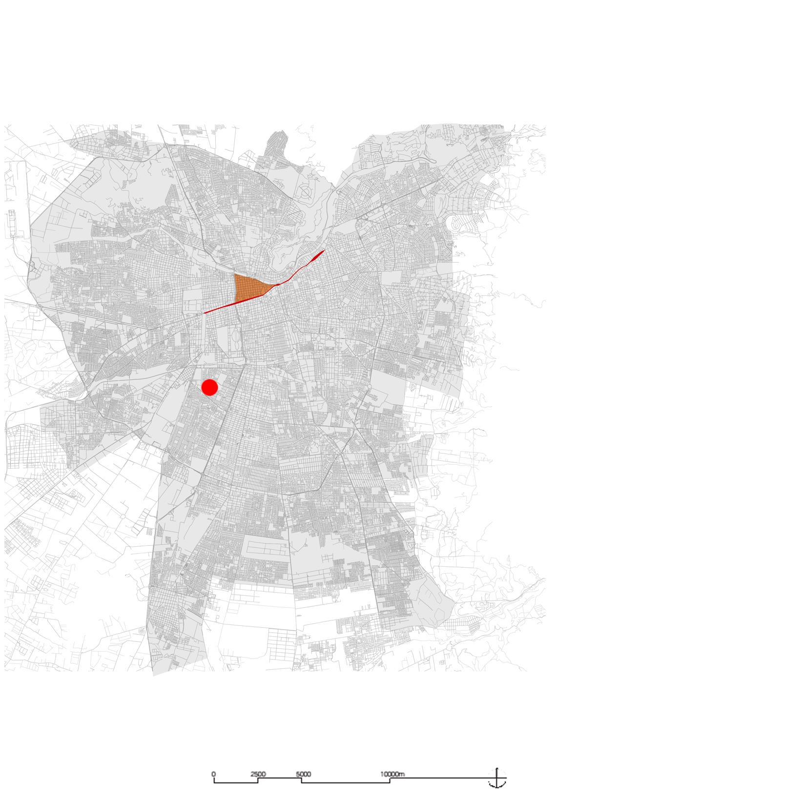

Cartografías de la Memoria: Utopía y Terror Santiago de Chile 1970 -1990

El campamento “La victoria”.
Antecedente del poder popular en Santiago de chile.
En la primera fase de la secuencia histórica de la plataforma digital, se observarán los antecedentes históricos que preceden al gobierno de la Unidad Popular.